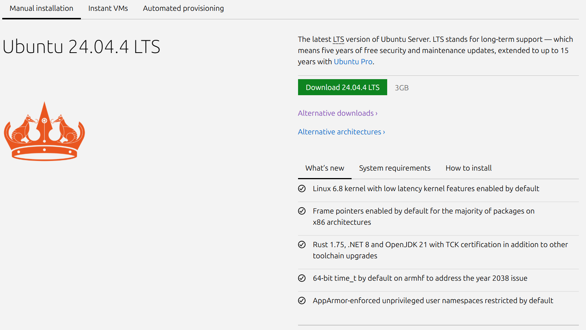
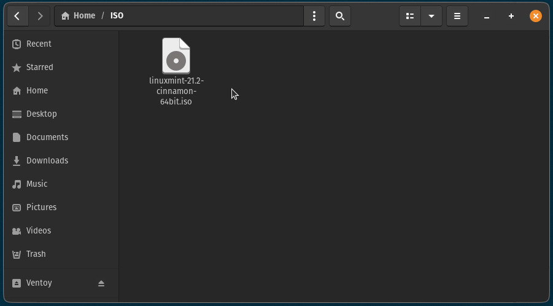

Ventoy Setup
Ventoy turns a regular USB drive into a bootable multi-ISO drive. You'll use it to boot into the Ubuntu Server installer. This step takes around 15 minutes.
Prerequisites
Before you start, make sure you have the following ready on your current computer:
- A USB drive with at least 8 GB of storage (all data will be erased)
- The Ubuntu Server ISO file downloaded from ubuntu.com
- A Windows, macOS, or Linux computer to prepare the USB
Download Ventoy
Head to the official Ventoy GitHub releases page or the SourceForge mirror and download the latest version for your operating system. Look for a file ending in .zip (Windows) or .tar.gz (Linux/macOS).
Download Ubuntu Server ISO
Navigate to the Ubuntu Server download page. Under the Manual installation section, click the green "Download 24.04 LTS" button to get the latest Long-Term Support image (typically named ubuntu-24.04.x-live-server-amd64.iso).

Install Ventoy to Your USB Drive
Extract the downloaded archive, then run the appropriate installer for your OS.
On Windows: Run Ventoy2Disk.exe, select your USB drive from the dropdown, and click Install.
On Linux: Open a terminal and run the following commands, replacing /dev/sdX with your actual USB device path (check with lsblk):
sudo sh Ventoy2Disk.sh -i /dev/sdX/dev/sdX is your USB drive and not your system disk. Running this on the wrong device will erase it permanently.
On macOS, use the VentoyWeb.sh script to launch a browser-based installer:
sudo bash VentoyWeb.shAdd the Ubuntu Server ISO
Once Ventoy is installed, your USB drive will appear as a regular storage device. Simply copy your Ubuntu Server .iso file directly onto the USB drive — no flashing tools needed.
cp ubuntu-24.04-live-server-amd64.iso /media/youruser/Ventoy/
Boot from the USB Drive
Plug the USB into your server machine. Power it on and enter the boot menu by pressing the appropriate key for your motherboard — usually F12, F2, Delete, or Esc.
Select your USB drive from the boot menu. Ventoy will load and present a list of ISO files. Select the Ubuntu Server ISO to begin the installer.